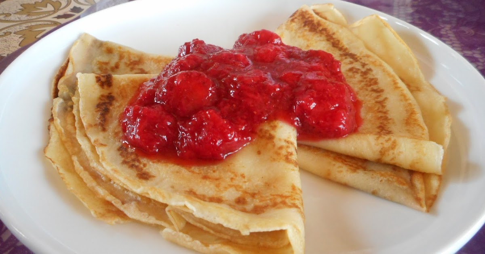

Ülepannipannkoogid
Nami-Nami
| Koostisosa |
Kogus |
| Muna (L) |
4tk |
| Suhkur |
60g |
| Nisujahu |
200g |
| Piim |
5dl |
| Sulatatud või |
50g |
| Vanilli suhkur |
Maitse järgi |
- Klopi munad suhkruga lahti, sega juurde jahu, piim, vanilli suhkur ja näpuotsaga soola ning sega ühtlaseks. Viimasena lisa juurde sulavõi, sega läbi.
- Kuumuta suur pann, lisa sobiv kogus tainast ja küpseta paar minutit keskmisel kuumusel, kuni pannkook on altpoolt kaunilt kuldne.
- Keera ringi ja küpseta ka teiselt poolt.
- Serveeri maasikamoosi ja jäätisega.